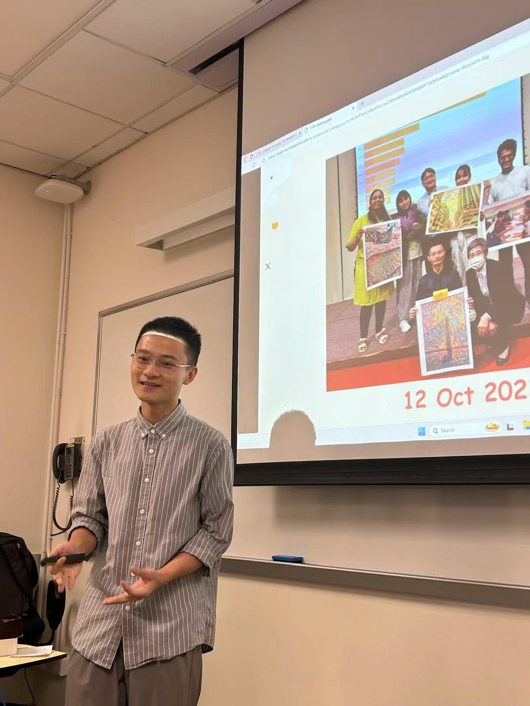

Welcome to my homepage
I’m YE Chengyu (Allen), from Chengdu, China.
Currently I work as a Research Assistant at the Comparative Culturology Lab.
I am pursuing my B.A. in Translation at Lingnan University, Hong Kong, with minors in Economics and Political Science.
My research interests include empirical linguistics and using interdisciplinary approaches to issues in linguistics and translation.